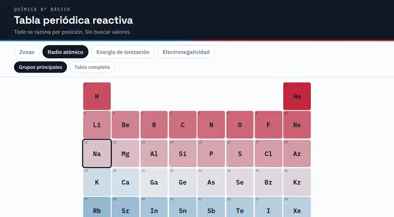

Tabla periódica reactiva
Imán y Escudo
en uso en clases
- Para
- Química, 8.º básico (CN08 OA14).
- Entrena
- Tendencias periódicas por posición, sin memorizar valores.
- Modos
- Comparación guiada, práctica con pistas y modo docente para proyectar.
Santiago, Chile
Mido lo que nadie está midiendo y lo convierto en datos, avisos y decisiones. Lo aprendí con suelos mineros, en el doctorado. Hoy lo hago con una flota de buses, en Andes, y en un colegio.

Data science
Una empresa de transporte no tenía datos del estado de sus buses ni aviso de las fallas que venían.
Armé el sistema que lee cada bus en tiempo real y un detector que estima el riesgo de falla. Hoy funciona en piloto, con datos reales.
Simulación. Los datos de la flota son del cliente y no se publican.
Ecología
¿Un suelo minero degradado se recupera al devolverle microorganismos, o sólo lo parece?
Lo medí en terreno y en invernadero, en Western Australia. Más actividad no fue recuperación. Lo que sí encontré fueron las especies de bacterias que importan para la estabilidad del ecosistema.
Datos publicados (Moreira-Grez et al. 2019, CC BY 4.0).
Publicaciones en Google Scholar; también en ORCID y ResearchGate.
Docencia
Hice herramientas web para que un curso practique sin nota y se vea qué falta reforzar.
Hoy se usan en clases y están publicadas.
Captura de una de ellas, la Tabla periódica reactiva.
Las imágenes son fragmentos de cada interfaz.
Imán y Escudo
en uso en clases

en uso en clases
publicada
Quién soy
Resuelvo problemas con lo que hay disponible.
Soy biólogo, y doctor en ecología microbiana por la University of Western Australia. Trabajo a diario con agentes de IA, con límites claros y revisando lo que hacen antes de usarlo.
Escríbeme
Fondo: simulación de microorganismos del suelo junto a una raíz. No es una micrografía.